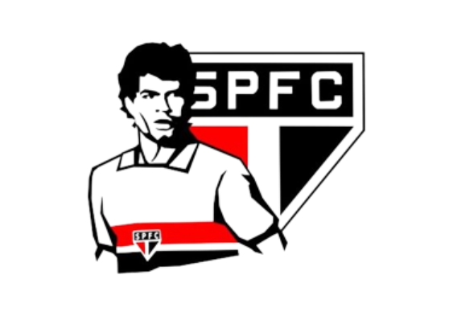
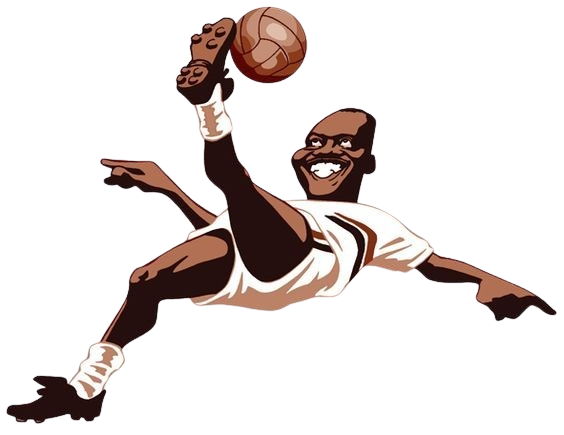

São Paulo F.C
Maior campeão continental do Brasil


Feitos históricos
Maior campeão mundial entre os brasileiros
Tríplice coroa em 1992 - 2005
Quadrupla coroa internacional 1993
Único 3x campeão consecutivo do Campeonato Brasileiro
Maior goleiro artilheiro do mundo em seu elenco, Rogério Ceni
Principais títulos
Brasileirão - 6x
Libertadores - 3x
Mundial - 3x
Sudamericana - 1x